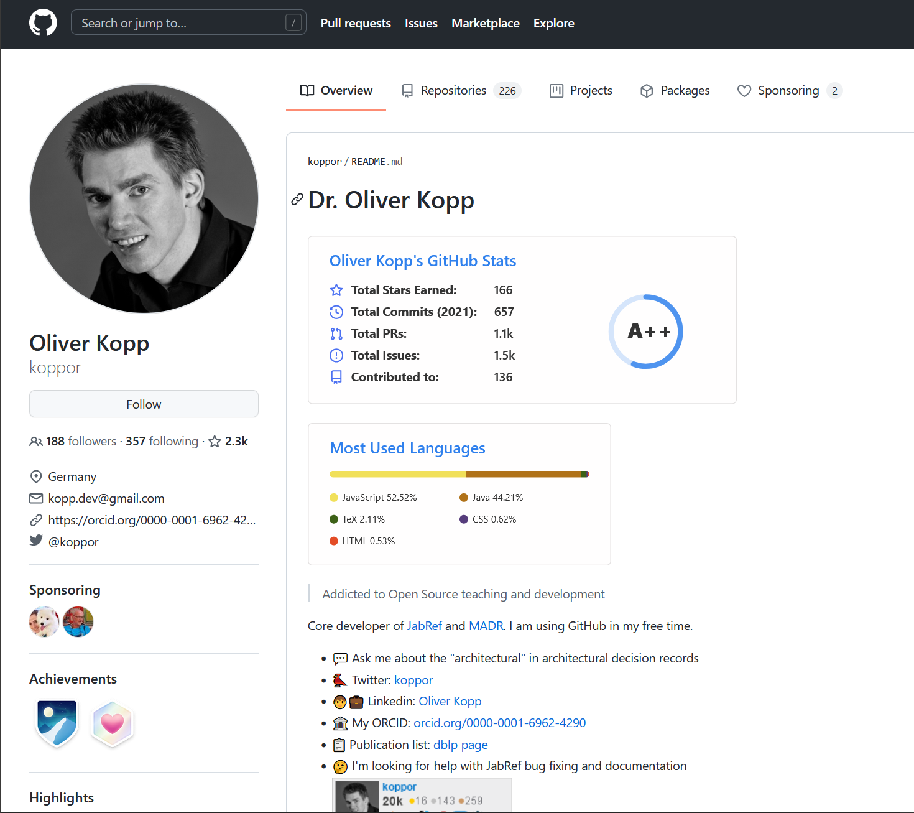
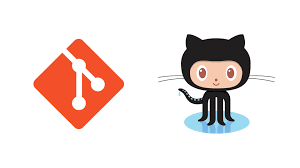
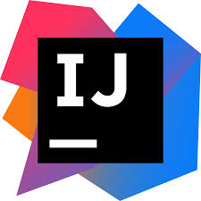
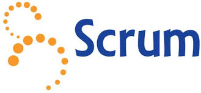
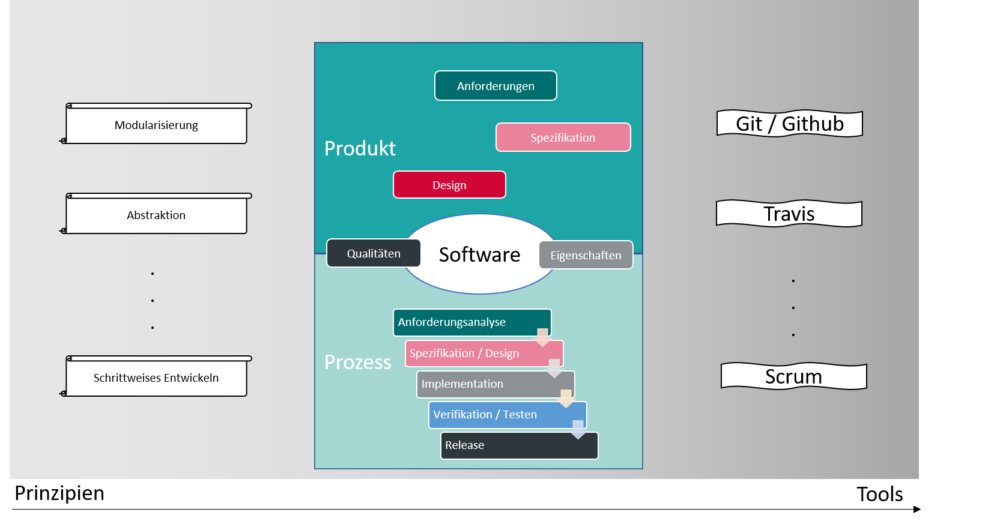
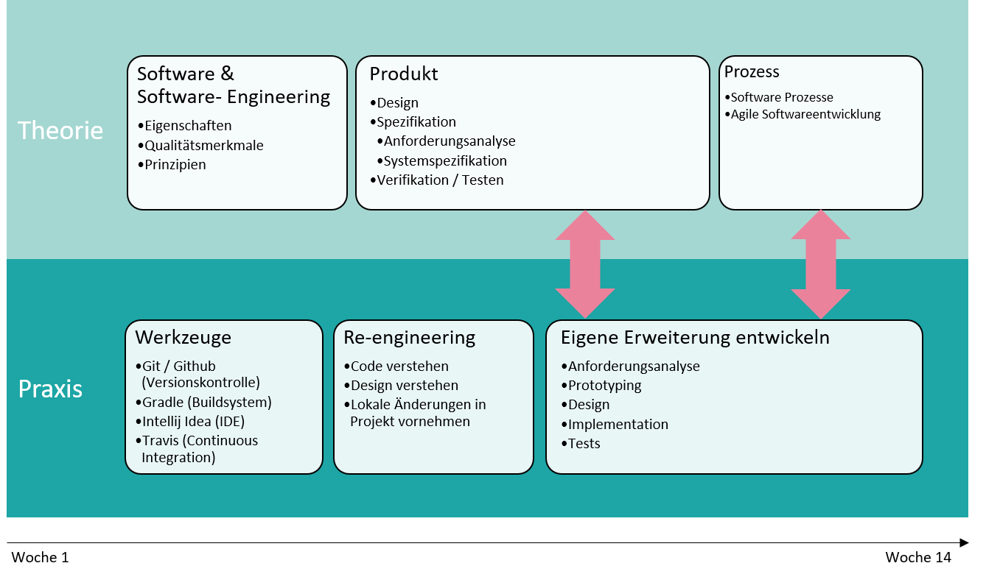
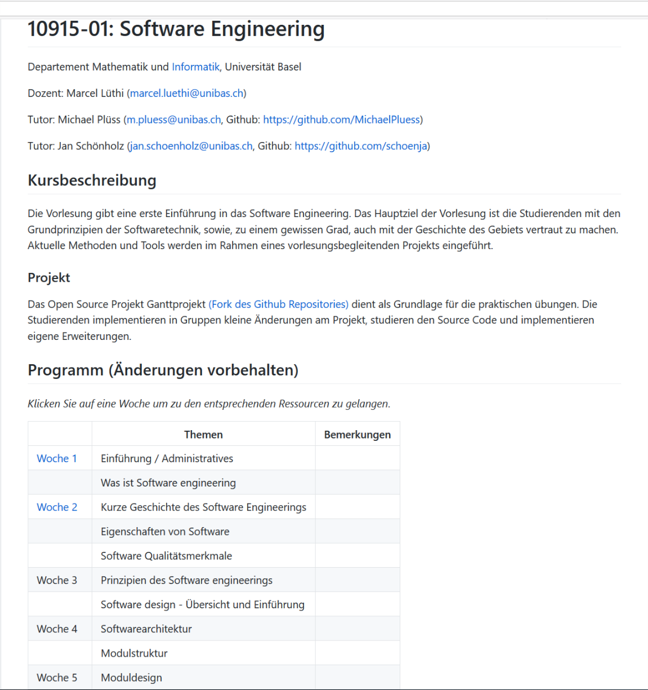

Software Engineering
Marcel Lüthi
Departement Mathematik und Informatik
Plan der heutigen Vorlesung
| Das Team |
| Kursziele |
| Wie funktioniert der Kurs |
| Warum brauchen wir Software Engineering |
| Was ist Software Engineering |
Plan der heutigen Vorlesung
| Das Team |
| Kursziele |
| Wie funktioniert der Kurs |
| Warum brauchen wir Software Engineering |
| Was ist Software Engineering |
Über mich
- Marcel Lüthi
- Dozent (75%)
- Wissenschaftlicher Mitarbeiter, Forschungsgruppe Gravis (25%)
- Forschungsgebiet: Statistische Formmodellierung
Erfahrung mit Software-Engineering
| Jahr | Funktion |
|---|---|
| 1997-2002 | Arbeit als Applikationsentwickler UBS (E-banking) |
| 1999-2003 | Informatikstudium FH Bern, Schwerpunkt Software Engineering |
| 2008- | Open-source Softwareentwicklung für medizinische Bildanalyse |
| 2017- | Dozent: Software Engineering, A & D, Programmieren, ... |
Tutor*innen
- Bachelorstudium Informatik
- Bachelorstudium Informatik
- Bachelorstudium Informatik
Oliver Kopp und andere Jabref Entwickler
...
Referenten aus der Industrie
Ziel: Einblicke in die Praxis erhalten.
- Wie wird Theorie in der Praxis umgesetzt?
- Wie unterscheidet sich Theorie und Praxis?
- Wie arbeitet ein Software-Engineering Team?
Zusage für eine Vorlesung: BlueSky IT Solutions
Vorlesungsteilnehmer*innen
- Was studieren Sie?
- Was sind ihre Erfahrungen mit Programmieren?
- Was erhoffen Sie sich zu lernen?
- Sollen wir uns siezen oder duzen
Plan der heutigen Vorlesung
| Das Team |
| Kursziele |
| Wie funktioniert der Kurs |
| Warum brauchen wir Software Engineering |
| Was ist Software Engineering |
Bauen
- Gebaut ca 2500 a.d.
- Höhe: 146m
- Arbeiter: Hundertausende
- Bauzeit: 20 Jahre
Engineering

https://commons.wikimedia.org/w/index.php?curid=10887229
- Gebaut 1930
- Höhe: 381m
- Arbeiter: ca. 3000
- Bauzeit: 11 Monate
Kursziele (1)
Softwareentwicklung als Ingenieursdisziplin zu verstehen
Software engineering?

"Quite a bit of today's software and its construction process resemble the Egyptian pyramid, but I would dare to say no one currently knows how to organize 3000 programmers to make a major piece of software from scratch in less than 11 months."
Alan Kay, 2001
Kursziele (2)
Schwierigkeiten und Limitierungen in der Softwareentwicklung zu verstehen.
Pop culture
Computing spread out much, much faster than educating unsophisticated people can happen. In the last 25 years or so, we actually got something like a pop culture, similar to what happened when television came on the scene and some of its inventors thought it would be a way of getting Shakespeare to the masses. But they forgot that you have to be more sophisticated and have more perspective to understand Shakespeare. What television was able to do was to capture people as they were. So I think the lack of a real computer science today, and the lack of real software engineering today, is partly due to this pop culture.
Allan Kay, 2004
Kursziele (3)
- Die Fundamente und Geschichte von Software Engineering kennenzulernen
- Lernen " Modeerscheinungen " von fundamentalen Konzepten zu unterscheiden.
Software Wartung
Kursziele (4)
Lernen existierende Programme zu verstehen
- Selbstvertrauen erlangen, existierende Projekte zu erweitern.

Kursziele (5)
  
- Werkzeuge des modernen Software Engineerings kennenlernen
Plan der heutigen Vorlesung
| Das Team |
| Kursziele |
| Wie funktioniert der Kurs |
| Warum brauchen wir Software Engineering |
| Was ist Software Engineering |
Plan (Übersicht)
Plan (Chronologisch)
Flipped Classroom
Leistung (für 6 CP)
- Selbststudium Theorie (3 h)
Theorie erarbeiten und Selbsttest lösen - Präsenzveranstaltung Theorie (1.5 h)
Besuchen, mitdiskutieren, Übungen lösen - Falls verpasst: Theorieübungsblatt bearbeiten und abgeben
- Präsenzveranstaltung Praxis (1.5 h)
- Praktische Übungen (3 h)
Leistungsüberprüfung
-
Bedingungen für Prüfungszulassung
- 9 der 12 Selbsttests bestanden.
- 4 von 5 Theorieübungen erfolgreich bearbeitet oder an entsprechender Vorlesung aktiv teilgenommen.
- 4 von 5 der praktischen Übungen erfolgreich bearbeitet
- Kursprojekt erfolgreich durchgeführt
(Alle Projektschritte erfolgreich bearbeitet)
Prüfung: 12.01.2022 von 10.00 - 12.00.
Praktische Übungen und Projekt
Literaturempfehlung
Grundlage dieses Kurses
Aktuelles Standardwerk
Deutsches Lehrbuch

- Weitere Literaturhinweise auf Kurswebpage
Plagiate
Ein Plagiat ([. . . ] aus lateinisch plagiarius, deutsch ” Seelenverkäufer, Menschenräuber“) ist die Anmaßung fremder geistiger Leistungen. Dies kann sich auf die Übernahme fremder Texte oder anderer Darstellungen [. . . ], fremder Ideen [. . . ] oder beides gleichzeitig [. . . ] beziehen.
Wikipedia
-
Folge:
- 0 Punkte für Übungsblatt sowie Verwarnung (beim ersten Mal)
- Nicht-Zulassung zur Prüfung (Wiederholungsfall)
Kurswebpage
 https://unibas-marcelluethi.github.io/software-engineering/Räumlichkeiten
Beide Präsenzveranstaltung (Theorie, Übung) finden online über Zoom statt.
- 08.00 - 10.00: Seminarraum 05.002, Spiegelgasse 5
- 12.00 - 14.00: Bernoullistrasse 30/32 - kleiner Hörsaal 120
Fragen und Anmerkungen
- Was habe ich vergessen zu klären?
- Was ist noch nicht ganz klar?
| Das Team |
| Kursziele |
| Wie funktioniert der Kurs |
| Warum brauchen wir Software Engineering |
| Was ist Software Engineering |